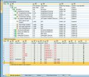
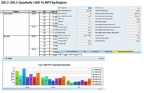

Creating an Effective FRACAS for Any Application
A FRACAS (Failure Reporting, Analysis, and Correction Action System) is an important process by which the quality and reliability of a product, service, process, or software application can be tracked, measured, and ultimately improved. Companies known for providing highly reliable products have identified a comprehensive closed-loop FRACAS as one of the most critical elements in their reliability programs. The following table was published by the Defense Systems Information Analysis Center (Formerly known as the Reliability Information Analysis Center, RIAC).
Most Important Reliability Tasks Based on Normalized Score
| Rank | Task | Normalized Score |
|---|---|---|
| 1 | FRACAS | 88.3 |
| 2 | Design Reviews | 83.8 |
| 3 | Subcontractor/Vendor Control | 72.1 |
| 4 | Parts Control | 71.2 |
| 5 | FMECA | 70.3 |
| 6 | Reliability Qualification Test | 68.5 |
| 7 | Predictions | 62.2 |
| 8 | Test, Analyze and Fix(TAAF) | 59.5 |
| 9 | Thermal Analysis | 58.6 |
| 10 | ESS | 54.1 |
As you can see, 88.3 percent of the survey respondents viewed a FRACAS as the most important reliability task. It received the highest rating because of its ability to feed root failure cause and corrective action information back into the design process to further improve design reliability. And, RAC points out, early elimination of root failure causes greatly contributes to both product reliability growth and attaining customer satisfaction following product/service delivery.
FRACAS Applications
A FRACAS can be adopted to cover a wide range of applications, including but not limited to:
 The Failure Reporting, Analysis and Corrective Action System (FRACAS) Application Guidelines
provides
information about what a FRACAS is, how it can be effectively tailored, and how it can be
applied beyond
the traditional tracking of hardware failures. To perform a qualitative assessment, such as
whether a
customer is satisfied with
a product or service, or a quantitative assessment, such as whether the reliability
performance goals of
a product or service have been achieved, a FRACAS must be used consistently. According to
this
publication, defining what constitutes a failure is perhaps the most critical aspect of
implementing an
effective FRACAS. The following table provides RAC definitions for a failure and failure
events.
The Failure Reporting, Analysis and Corrective Action System (FRACAS) Application Guidelines
provides
information about what a FRACAS is, how it can be effectively tailored, and how it can be
applied beyond
the traditional tracking of hardware failures. To perform a qualitative assessment, such as
whether a
customer is satisfied with
a product or service, or a quantitative assessment, such as whether the reliability
performance goals of
a product or service have been achieved, a FRACAS must be used consistently. According to
this
publication, defining what constitutes a failure is perhaps the most critical aspect of
implementing an
effective FRACAS. The following table provides RAC definitions for a failure and failure
events.
Failure and Failure Events
| Terms | Definitions |
|---|---|
| Failure | An event in which an item does not perform one or more of its required functions within the specified limits under specified conditions. A failure can either be catastrophic (total loss of function) or out-of-tolerance (degraded function beyond specified limits due to such occurrences as part failure, detuning, misalignment, and maladjustment, which are often classified as faults). |
| Failure Symptom | Any circumstance, event, or condition associated with the failure that indicates its existence or occurrence. Failure symptoms can include a temporary, intermittent indication of failure that cannot be duplicated. |
| Failure Effect | The consequence that a particular failure mode has upon the operation, function, or status of a product or service. |
| Failure Mode | The type of defect contributing to a failure, the consequence of the failure (i.e., how the failure manifests), or the manner in which the failure is observed. |
| Failure Mechanism | The process that results in the failure; the process of degradation or chain of events leading to and resulting in a particular failure mode. |
| Failure Cause | The circumstance that induces or activates a failure mechanism, e.g., defective soldering, design weakness, assembly techniques, software error, manufacturing process, clerical error, etc |
Failure Classifications
According to the Failure Reporting, Analysis and Corrective Action System (FRACAS) Application Guidelines, the classification of failure events helps to determine:
- The level of analysis that should be performed on each failure.
- The appropriate corrective action that should be taken (and when) to eliminate the failure or at least to minimize its recurrence.
The following Table lists the generic categories that DSIAC (RIAC) uses to classify failures
| Classification | Definitions |
|---|---|
| Failure, Relevant | A product (or service) failure that has been verified and can be expected to occur in normal operational use. Relevancy indicates whether a specific failure should "count" or not in the calculation of reliability for a produce or service (see "Failure, Chargeable" below). |
| Failure, Non-Relevant | A product (or service) failure that has been verified as having been caused by a condition not defined for normal operational use |
| Failure, Chargeable | A relevant primary failure of the product (or service) under test, and any secondary failures resulting from a single failure incident. This definition of failure is typically limited to formal, contractually required reliability tests (performed in-house or in the field). |
| Failure, Non- Chargeable | A non-relevant failure, or a relevant failure caused by a previously agreed to set of conditions that eliminates the assignment of failure responsibility to a specific functional group. This definition of failure is typically limited to formal, contractually required reliability tests (performed in-house or in the field). |
| Failure, Pattern | The occurrence of two or more failures of the same part (or function) in identical or equivalent applications, where the failures are caused by the same basic failure mechanism, and the failures occur at a rate inconsistent with the expected part (or function) failure rate. | Failure, Mulitple | Simultaneous occurrence of two or more verified independent failures. When two or more failed parts are found during troubleshooting, and assignable causes cannot be verified as dependent, multiple failures are presumed to have occurred. |
In developing a FRACAS, you may choose to either adopt the RAC terminology and classifications or to use your own.
Capturing Incident Information
- 
- Record the Incident
- Perform incident analysis.
- Identify the corrective action.
- Implement the corrective action.
- Verify the corrective action and close out the incident.
A FRACAS provides the means for initiating incident reports, the analysis of incidents, and feedback on the corrective actions implemented in the design, software, manufacturing, and test processes. Such data generally consists of the identification of the equipment or the software involved in the incident, the time and circumstances of the incident, the nature of the incident itself, and related information about part failure rate and any engineering studies and solutions associated with the incident.
Benefits of a Computerized FRACAS
The timely dissemination of accurate and significant incident information is necessary to identify, implement, and verify corrective actions quickly and effectively. Being able to remedy a situation promptly makes it possible to avoid additional costs, schedule delays, safety-related events, and declining customer satisfaction due to recurrences. The necessity for accessing up-to-date incident information in an organized manner easily justifies the use of dedicated software capable of meeting these demands.
The benefits of a computerized FRACAS, which are both immediate and extremely valuable, include the system's ability to:
- Store incident, analysis, and corrective action information in a database so that this information can be used to determine the root cause of a failure and to detect historical trends.
- Identify, select, and prioritize the incidents that are to undergo root cause analysis.
- Document the corrective actions that are identified, implemented, and verified to prevent the recurrence of a root-cause failure.
- Provide appropriate personnel with timely access to all relevant incident, analysis, and corrective action information to support reliability growth and proactive decisions to prevent similar problems from occurring in future products or services (closing the loop).
When assessing FRACAS software, other important features to look for include the ability to:
- Customize the structure and requirements of the FRACAS in a manner that addresses the type of products/services offered and the nature of the market place in which they compete.
- Establish and record cumulative test time and operating time on all equipment during their development and service time so that these records can then be used for calculating failure rates, cost calculations, and associated trends.
- Provide full-featured reporting and graphing capabilities for exploring failure trends and generating both user-level and management-level reports.
- Implement a comprehensive closed-loop FRACAS that can support an unlimited range of applications and customized workflow processes.
When a closed-loop FRACAS is implemented, the system includes provisions to ensure that effective corrective actions are taken on a timely basis. The information gathered from the FRACAS can easily be applied to future system designs to help ensure better reliability as development for the product, service, process, or software application moves forward. Using such a system, you can perform a follow-up audit to review all open incidents, analyses, and corrective action dates, and then easily report delays or improper implementations to management.
A good FRACAS software package will allow you to continually improve the reliability of a product, service, process, or software program by efficiently and effectively capturing, optimizing, and delivering all relevant incident, analysis, and corrective action information to all appropriate personnel.
For information about the PTC Windchill FRACAS tool, and how it addresses all of the FRACAS objectives described in this technical brief, please email us.